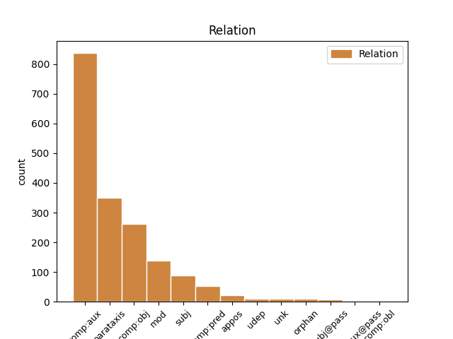
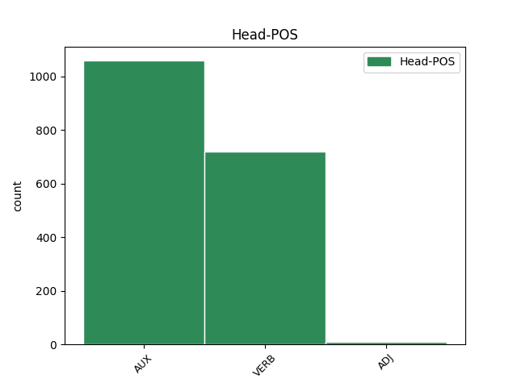
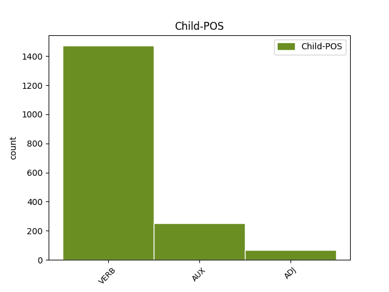

Distribution of features within this leaf



Agreement Rules sorted by frequency.
- When the dependent token is the parataxis(parataxis) of the head token,
1 První _ _ _ _ 0 _ _ _
2 vodorovná _ _ _ _ 0 _ _ _
3 dokazuje dokazovat VERB VB-S---3P-AA--- Aspect=Imp|Mood=Ind|Number=Sing|Person=3|Polarity=Pos|Tense=Pres|VerbForm=Fin|Voice=Act 0 _ _ _
4 , _ _ _ _ 0 _ _ _
5 v _ _ _ _ 0 _ _ _
6 níž _ _ _ _ 0 _ _ _
7 je být VERB VB-S---3P-AA--- Mood=Ind|Number=Sing|Person=3|Polarity=Pos|Tense=Pres|VerbForm=Fin|Voice=Act 3 parataxis _ _
8 pouze _ _ _ _ 0 _ _ _
9 vodík _ _ _ _ 0 _ _ _
10 a _ _ _ _ 0 _ _ _
11 helium _ _ _ _ 0 _ _ _
12 , _ _ _ _ 0 _ _ _
13 je _ _ _ _ 0 _ _ _
14 rudimentární _ _ _ _ 0 _ _ _
15 perioda _ _ _ _ 0 _ _ _
16 , _ _ _ _ 0 _ _ _
17 rudimentum _ _ _ _ 0 _ _ _
18 , _ _ _ _ 0 _ _ _
19 zákrsek _ _ _ _ 0 _ _ _
20 , _ _ _ _ 0 _ _ _
21 nedokonalý _ _ _ _ 0 _ _ _
22 počátek _ _ _ _ 0 _ _ _
23 . _ _ _ _ 0 _ _ _
1 Necháme _ _ _ _ 0 _ _ _
2 - _ _ _ _ 0 _ _ _
3 li _ _ _ _ 0 _ _ _
4 stranou _ _ _ _ 0 _ _ _
5 některé _ _ _ _ 0 _ _ _
6 praktické _ _ _ _ 0 _ _ _
7 aplikace _ _ _ _ 0 _ _ _
8 modelování _ _ _ _ 0 _ _ _
9 složitých _ _ _ _ 0 _ _ _
10 potenciálů _ _ _ _ 0 _ _ _
11 těles _ _ _ _ 0 _ _ _
12 , _ _ _ _ 0 _ _ _
13 ukazují ukazovat VERB VB-P---3P-AA--- Aspect=Imp|Mood=Ind|Number=Plur|Person=3|Polarity=Pos|Tense=Pres|VerbForm=Fin|Voice=Act 0 _ _ _
14 nám _ _ _ _ 0 _ _ _
15 práce _ _ _ _ 0 _ _ _
16 tohoto _ _ _ _ 0 _ _ _
17 druhu _ _ _ _ 0 _ _ _
18 , _ _ _ _ 0 _ _ _
19 které _ _ _ _ 0 _ _ _
20 závěry _ _ _ _ 0 _ _ _
21 nebeské _ _ _ _ 0 _ _ _
22 mechaniky _ _ _ _ 0 _ _ _
23 jsou být AUX VB-P---3P-AA--- Mood=Ind|Number=Plur|Person=3|Polarity=Pos|Tense=Pres|VerbForm=Fin|Voice=Act 13 comp:obj _ _
24 důsledkem _ _ _ _ 0 _ _ _
25 speciálních _ _ _ _ 0 _ _ _
26 předpokladů _ _ _ _ 0 _ _ _
27 a _ _ _ _ 0 _ _ _
28 které _ _ _ _ 0 _ _ _
29 mají _ _ _ _ 0 _ _ _
30 obecnější _ _ _ _ 0 _ _ _
31 platnost _ _ _ _ 0 _ _ _
32 . _ _ _ _ 0 _ _ _
1 Byla _ _ _ _ 0 _ _ _
2 proto _ _ _ _ 0 _ _ _
3 stanovena _ _ _ _ 0 _ _ _
4 výběrová _ _ _ _ 0 _ _ _
5 pravidla _ _ _ _ 0 _ _ _
6 určující určující ADJ AGNP1-----A---- Aspect=Imp|Case=Nom|Gender=Neut|Number=Plur|Polarity=Pos|Tense=Pres|VerbForm=Part|Voice=Act 0 _ _ _
7 , _ _ _ _ 0 _ _ _
8 které _ _ _ _ 0 _ _ _
9 z _ _ _ _ 0 _ _ _
10 možných _ _ _ _ 0 _ _ _
11 přechodů _ _ _ _ 0 _ _ _
12 jsou být AUX VB-P---3P-AA--- Mood=Ind|Number=Plur|Person=3|Polarity=Pos|Tense=Pres|VerbForm=Fin|Voice=Act 6 mod _ _
13 dovoleny _ _ _ _ 0 _ _ _
14 . _ _ _ _ 0 _ _ _
1 V _ _ _ _ 0 _ _ _
2 seznamu _ _ _ _ 0 _ _ _
3 rostlin _ _ _ _ 0 _ _ _
4 je být AUX VB-S---3P-AA--- Mood=Ind|Number=Sing|Person=3|Polarity=Pos|Tense=Pres|VerbForm=Fin|Voice=Act 0 _ _ _
5 u _ _ _ _ 0 _ _ _
6 každé _ _ _ _ 0 _ _ _
7 rostliny _ _ _ _ 0 _ _ _
8 uvedeno _ _ _ _ 0 _ _ _
9 , _ _ _ _ 0 _ _ _
10 jaký _ _ _ _ 0 _ _ _
11 si _ _ _ _ 0 _ _ _
12 činí činit VERB VB-S---3P-AA--- Aspect=Imp|Mood=Ind|Number=Sing|Person=3|Polarity=Pos|Tense=Pres|VerbForm=Fin|Voice=Act 4 subj _ _
13 nárok _ _ _ _ 0 _ _ _
14 na _ _ _ _ 0 _ _ _
15 složení _ _ _ _ 0 _ _ _
16 substrátu _ _ _ _ 0 _ _ _
17 . _ _ _ _ 0 _ _ _
1 Z _ _ _ _ 0 _ _ _
2 konkrétních _ _ _ _ 0 _ _ _
3 výpočtů _ _ _ _ 0 _ _ _
4 vyplývá _ _ _ _ 0 _ _ _
5 , _ _ _ _ 0 _ _ _
6 že _ _ _ _ 0 _ _ _
7 u _ _ _ _ 0 _ _ _
8 vícefázových _ _ _ _ 0 _ _ _
9 měničů _ _ _ _ 0 _ _ _
10 je být AUX VB-S---3P-AA--- Mood=Ind|Number=Sing|Person=3|Polarity=Pos|Tense=Pres|VerbForm=Fin|Voice=Act 0 _ _ _
11 pro _ _ _ _ 0 _ _ _
12 velikost _ _ _ _ 0 _ _ _
13 vyhlazovací _ _ _ _ 0 _ _ _
14 tlumivky _ _ _ _ 0 _ _ _
15 rozhodující rozhodující ADJ AGFS1-----A---- Aspect=Imp|Case=Nom|Gender=Fem|Number=Sing|Polarity=Pos|Tense=Pres|VerbForm=Part|Voice=Act 10 comp:pred _ LDeriv=rozhodovat
16 vlnivost _ _ _ _ 0 _ _ _
17 proudu _ _ _ _ 0 _ _ _
18 ve _ _ _ _ 0 _ _ _
19 fázi _ _ _ _ 0 _ _ _
20 s _ _ _ _ 0 _ _ _
21 ohledem _ _ _ _ 0 _ _ _
22 na _ _ _ _ 0 _ _ _
23 dimenzování _ _ _ _ 0 _ _ _
24 komutačního _ _ _ _ 0 _ _ _
25 obvodu _ _ _ _ 0 _ _ _
26 a _ _ _ _ 0 _ _ _
27 oddělení _ _ _ _ 0 _ _ _
28 komutačních _ _ _ _ 0 _ _ _
29 procesů _ _ _ _ 0 _ _ _
30 jednotlivých _ _ _ _ 0 _ _ _
31 fází _ _ _ _ 0 _ _ _
32 . _ _ _ _ 0 _ _ _
1 Částice _ _ _ _ 0 _ _ _
2 * _ _ _ _ 0 _ _ _
3 může _ _ _ _ 0 _ _ _
4 proletět _ _ _ _ 0 _ _ _
5 přímočaře _ _ _ _ 0 _ _ _
6 statisíci _ _ _ _ 0 _ _ _
7 atomů _ _ _ _ 0 _ _ _
8 a _ _ _ _ 0 _ _ _
9 neodchýlí _ _ _ _ 0 _ _ _
10 se _ _ _ _ 0 _ _ _
11 ze _ _ _ _ 0 _ _ _
12 svého _ _ _ _ 0 _ _ _
13 směru _ _ _ _ 0 _ _ _
14 , _ _ _ _ 0 _ _ _
15 pouze _ _ _ _ 0 _ _ _
16 ionisuje ionizovat VERB VB-S---3P-AA--- Mood=Ind|Number=Sing|Person=3|Polarity=Pos|Tense=Pres|VerbForm=Fin|Voice=Act 0 _ _ _
17 , _ _ _ _ 0 _ _ _
18 odtrhává odtrhávat VERB VB-S---3P-AA--- Aspect=Imp|Mood=Ind|Number=Sing|Person=3|Polarity=Pos|Tense=Pres|VerbForm=Fin|Voice=Act 16 appos _ LDeriv=odtrhat
19 z _ _ _ _ 0 _ _ _
20 atomu _ _ _ _ 0 _ _ _
21 elektrony _ _ _ _ 0 _ _ _
22 . _ _ _ _ 0 _ _ _
1 Tato _ _ _ _ 0 _ _ _
2 měření _ _ _ _ 0 _ _ _
3 byla být AUX VpQW---XR-AA--- Gender=Fem,Neut|Number=Plur,Sing|Polarity=Pos|Tense=Past|VerbForm=Part|Voice=Act 0 _ _ _
4 popsána popsat VERB VpQW---XR-AA--- Gender=Fem,Neut|Number=Plur,Sing|Polarity=Pos|Tense=Past|VerbForm=Part|Voice=Act 3 comp:aux _ _
5 v _ _ _ _ 0 _ _ _
6 * _ _ _ _ 0 _ _ _
7 , _ _ _ _ 0 _ _ _
8 kde _ _ _ _ 0 _ _ _
9 sloužila _ _ _ _ 0 _ _ _
10 k _ _ _ _ 0 _ _ _
11 ověření _ _ _ _ 0 _ _ _
12 správnosti _ _ _ _ 0 _ _ _
13 vztahů _ _ _ _ 0 _ _ _
14 pro _ _ _ _ 0 _ _ _
15 rozptyl _ _ _ _ 0 _ _ _
16 polovinových _ _ _ _ 0 _ _ _
17 přeskokových _ _ _ _ 0 _ _ _
18 napětí _ _ _ _ 0 _ _ _
19 . _ _ _ _ 0 _ _ _
1 Kapacitní _ _ _ _ 0 _ _ _
2 vazbou _ _ _ _ 0 _ _ _
3 , _ _ _ _ 0 _ _ _
4 indukované _ _ _ _ 0 _ _ _
5 napětí _ _ _ _ 0 _ _ _
6 závisí záviset VERB VB-S---3P-AA--- Aspect=Imp|Mood=Ind|Number=Sing|Person=3|Polarity=Pos|Tense=Pres|VerbForm=Fin|Voice=Act 0 _ _ _
7 pouze _ _ _ _ 0 _ _ _
8 na _ _ _ _ 0 _ _ _
9 napětí _ _ _ _ 0 _ _ _
10 troleje _ _ _ _ 0 _ _ _
11 , _ _ _ _ 0 _ _ _
12 ne _ _ _ _ 0 _ _ _
13 na _ _ _ _ 0 _ _ _
14 kmitočtu _ _ _ _ 0 _ _ _
15 a _ _ _ _ 0 _ _ _
16 délce _ _ _ _ 0 _ _ _
17 souběhu _ _ _ _ 0 _ _ _
18 , _ _ _ _ 0 _ _ _
19 na _ _ _ _ 0 _ _ _
20 těchto _ _ _ _ 0 _ _ _
21 veličinách _ _ _ _ 0 _ _ _
22 závisí záviset VERB VB-S---3P-AA--- Aspect=Imp|Mood=Ind|Number=Sing|Person=3|Polarity=Pos|Tense=Pres|VerbForm=Fin|Voice=Act 6 orphan _ _
23 nabíjecí _ _ _ _ 0 _ _ _
24 proud _ _ _ _ 0 _ _ _
25 . _ _ _ _ 0 _ _ _
1 Dvourozměrná _ _ _ _ 0 _ _ _
2 interpolace _ _ _ _ 0 _ _ _
3 vyhlazování _ _ _ _ 0 _ _ _
4 naleznou naleznout VERB VB-P---3P-AA--- Mood=Ind|Number=Plur|Person=3|Polarity=Pos|Tense=Pres|VerbForm=Fin|Voice=Act 0 _ _ _
5 jistě _ _ _ _ 0 _ _ _
6 použití _ _ _ _ 0 _ _ _
7 všude _ _ _ _ 0 _ _ _
8 tam _ _ _ _ 0 _ _ _
9 , _ _ _ _ 0 _ _ _
10 kde _ _ _ _ 0 _ _ _
11 jsou být AUX VB-P---3P-AA--- Mood=Ind|Number=Plur|Person=3|Polarity=Pos|Tense=Pres|VerbForm=Fin|Voice=Act 4 udep _ _
12 zpracovávána _ _ _ _ 0 _ _ _
13 měření _ _ _ _ 0 _ _ _
14 prováděná _ _ _ _ 0 _ _ _
15 na _ _ _ _ 0 _ _ _
16 ploše _ _ _ _ 0 _ _ _
17 v _ _ _ _ 0 _ _ _
18 gravimetrii _ _ _ _ 0 _ _ _
19 , _ _ _ _ 0 _ _ _
20 geomagnetismu _ _ _ _ 0 _ _ _
21 , _ _ _ _ 0 _ _ _
22 geodézii _ _ _ _ 0 _ _ _
23 . _ _ _ _ 0 _ _ _
1 Vápnomilné _ _ _ _ 0 _ _ _
2 jsou být VERB VB-P---3P-AA--- Mood=Ind|Number=Plur|Person=3|Polarity=Pos|Tense=Pres|VerbForm=Fin|Voice=Act 0 _ _ _
3 takové _ _ _ _ 0 _ _ _
4 , _ _ _ _ 0 _ _ _
5 které _ _ _ _ 0 _ _ _
6 vápník _ _ _ _ 0 _ _ _
7 snesou snést VERB VB-P---3P-AA--- Mood=Ind|Number=Plur|Person=3|Polarity=Pos|Tense=Pres|VerbForm=Fin|Voice=Act 2 unk _ SpaceAfter=No
8 , _ _ _ _ 0 _ _ _
9 není _ _ _ _ 0 _ _ _
10 však _ _ _ _ 0 _ _ _
11 nutné _ _ _ _ 0 _ _ _
12 jim _ _ _ _ 0 _ _ _
13 ho _ _ _ _ 0 _ _ _
14 přidávat _ _ _ _ 0 _ _ _
15 . _ _ _ _ 0 _ _ _
1 V _ _ _ _ 0 _ _ _
2 další _ _ _ _ 0 _ _ _
3 části _ _ _ _ 0 _ _ _
4 směrnice _ _ _ _ 0 _ _ _
5 je být AUX VB-S---3P-AA--- Mood=Ind|Number=Sing|Person=3|Polarity=Pos|Tense=Pres|VerbForm=Fin|Voice=Act 0 _ _ _
6 zevrubně _ _ _ _ 0 _ _ _
7 rozvedeno _ _ _ _ 0 _ _ _
8 , _ _ _ _ 0 _ _ _
9 co _ _ _ _ 0 _ _ _
10 má mít VERB VB-S---3P-AA--- Mood=Ind|Number=Sing|Person=3|Polarity=Pos|Tense=Pres|VerbForm=Fin|Voice=Act 5 subj@pass _ _
11 být _ _ _ _ 0 _ _ _
12 v _ _ _ _ 0 _ _ _
13 návrhu _ _ _ _ 0 _ _ _
14 na _ _ _ _ 0 _ _ _
15 provedení _ _ _ _ 0 _ _ _
16 delimitace _ _ _ _ 0 _ _ _
17 obsaženo _ _ _ _ 0 _ _ _
18 , _ _ _ _ 0 _ _ _
19 s _ _ _ _ 0 _ _ _
20 uvedením _ _ _ _ 0 _ _ _
21 důvodů _ _ _ _ 0 _ _ _
22 delimitace _ _ _ _ 0 _ _ _
23 a _ _ _ _ 0 _ _ _
24 ekonomického _ _ _ _ 0 _ _ _
25 přínosu _ _ _ _ 0 _ _ _
26 , _ _ _ _ 0 _ _ _
27 který _ _ _ _ 0 _ _ _
28 z _ _ _ _ 0 _ _ _
29 delimitace _ _ _ _ 0 _ _ _
30 vznikne _ _ _ _ 0 _ _ _
31 . _ _ _ _ 0 _ _ _
Disagree Examples:
1 Vznik _ _ _ _ 0 _ _ _
2 pracovního _ _ _ _ 0 _ _ _
3 poměru _ _ _ _ 0 _ _ _
4 nesmí _ _ _ _ 0 _ _ _
5 být _ _ _ _ 0 _ _ _
6 v _ _ _ _ 0 _ _ _
7 občanském _ _ _ _ 0 _ _ _
8 průkazu _ _ _ _ 0 _ _ _
9 zapsán _ _ _ _ 0 _ _ _
10 , _ _ _ _ 0 _ _ _
11 není být AUX VB-S---3P-NA--- Mood=Ind|Number=Sing|Person=3|Polarity=Neg|Tense=Pres|VerbForm=Fin|Voice=Act 0 _ _ _
12 - _ _ _ _ 0 _ _ _
13 li _ _ _ _ 0 _ _ _
14 v _ _ _ _ 0 _ _ _
15 něm _ _ _ _ 0 _ _ _
16 zapsáno zapsat VERB VpNS---XR-AA--- Gender=Neut|Number=Sing|Polarity=Pos|Tense=Past|VerbForm=Part|Voice=Act 11 comp:pred _ _
17 skončení _ _ _ _ 0 _ _ _
18 předchozího _ _ _ _ 0 _ _ _
19 pracovního _ _ _ _ 0 _ _ _
20 poměru _ _ _ _ 0 _ _ _
21 . _ _ _ _ 0 _ _ _
1 Dotazují _ _ _ _ 0 _ _ _
2 se _ _ _ _ 0 _ _ _
3 jak _ _ _ _ 0 _ _ _
4 důchodci _ _ _ _ 0 _ _ _
5 , _ _ _ _ 0 _ _ _
6 kteří _ _ _ _ 0 _ _ _
7 pracují _ _ _ _ 0 _ _ _
8 v _ _ _ _ 0 _ _ _
9 trvalém _ _ _ _ 0 _ _ _
10 zaměstnání _ _ _ _ 0 _ _ _
11 , _ _ _ _ 0 _ _ _
12 tak _ _ _ _ 0 _ _ _
13 i _ _ _ _ 0 _ _ _
14 důchodci _ _ _ _ 0 _ _ _
15 , _ _ _ _ 0 _ _ _
16 kteří _ _ _ _ 0 _ _ _
17 odpracovali odpracovat VERB VpMP---XR-AA--- Animacy=Anim|Aspect=Perf|Gender=Masc|Number=Plur|Polarity=Pos|Tense=Past|VerbForm=Part|Voice=Act 0 _ _ _
18 v _ _ _ _ 0 _ _ _
19 krátkodobém _ _ _ _ 0 _ _ _
20 zaměstnání _ _ _ _ 0 _ _ _
21 v _ _ _ _ 0 _ _ _
22 kalendářním _ _ _ _ 0 _ _ _
23 roce _ _ _ _ 0 _ _ _
24 # _ _ _ _ 0 _ _ _
25 pracovních _ _ _ _ 0 _ _ _
26 dnů _ _ _ _ 0 _ _ _
27 nebo _ _ _ _ 0 _ _ _
28 # _ _ _ _ 0 _ _ _
29 pracovních _ _ _ _ 0 _ _ _
30 hodin _ _ _ _ 0 _ _ _
31 , _ _ _ _ 0 _ _ _
32 tak _ _ _ _ 0 _ _ _
33 jak _ _ _ _ 0 _ _ _
34 jim _ _ _ _ 0 _ _ _
35 to _ _ _ _ 0 _ _ _
36 umožňuje umožňovat VERB VB-S---3P-AA--- Aspect=Imp|Mood=Ind|Number=Sing|Person=3|Polarity=Pos|Tense=Pres|VerbForm=Fin|Voice=Act 17 mod _ _
37 nařízení _ _ _ _ 0 _ _ _
38 vlády _ _ _ _ 0 _ _ _
39 ČSSR _ _ _ _ 0 _ _ _
40 o _ _ _ _ 0 _ _ _
41 výjimečném _ _ _ _ 0 _ _ _
42 poskytování _ _ _ _ 0 _ _ _
43 důchodu _ _ _ _ 0 _ _ _
44 některým _ _ _ _ 0 _ _ _
45 pracujícím _ _ _ _ 0 _ _ _
46 důchodcům _ _ _ _ 0 _ _ _
47 . _ _ _ _ 0 _ _ _
1 Shora _ _ _ _ 0 _ _ _
2 uvedené _ _ _ _ 0 _ _ _
3 obecné _ _ _ _ 0 _ _ _
4 podmínky _ _ _ _ 0 _ _ _
5 pro _ _ _ _ 0 _ _ _
6 nárok _ _ _ _ 0 _ _ _
7 na _ _ _ _ 0 _ _ _
8 dovolenou _ _ _ _ 0 _ _ _
9 , _ _ _ _ 0 _ _ _
10 tak _ _ _ _ 0 _ _ _
11 jak _ _ _ _ 0 _ _ _
12 již _ _ _ _ 0 _ _ _
13 bylo být AUX VpNS---XR-AA--- Gender=Neut|Number=Sing|Polarity=Pos|Tense=Past|VerbForm=Part|Voice=Act 16 parataxis _ _
14 uvedeno _ _ _ _ 0 _ _ _
15 , _ _ _ _ 0 _ _ _
16 musí muset VERB VB-P---3P-AA--1 Mood=Ind|Number=Plur|Person=3|Polarity=Pos|Tense=Pres|VerbForm=Fin|Voice=Act 0 _ _ _
17 být _ _ _ _ 0 _ _ _
18 splněny _ _ _ _ 0 _ _ _
19 i _ _ _ _ 0 _ _ _
20 u _ _ _ _ 0 _ _ _
21 pracujících _ _ _ _ 0 _ _ _
22 poživatelů _ _ _ _ 0 _ _ _
23 starobního _ _ _ _ 0 _ _ _
24 důchodu _ _ _ _ 0 _ _ _
25 . _ _ _ _ 0 _ _ _
1 Protože _ _ _ _ 0 _ _ _
2 k _ _ _ _ 0 _ _ _
3 uvedeným _ _ _ _ 0 _ _ _
4 změnám _ _ _ _ 0 _ _ _
5 došlo _ _ _ _ 0 _ _ _
6 až _ _ _ _ 0 _ _ _
7 v _ _ _ _ 0 _ _ _
8 době _ _ _ _ 0 _ _ _
9 , _ _ _ _ 0 _ _ _
10 kdy _ _ _ _ 0 _ _ _
11 již _ _ _ _ 0 _ _ _
12 byly _ _ _ _ 0 _ _ _
13 vytištěny _ _ _ _ 0 _ _ _
14 terminované _ _ _ _ 0 _ _ _
15 poukazy _ _ _ _ 0 _ _ _
16 na _ _ _ _ 0 _ _ _
17 lázeňskou _ _ _ _ 0 _ _ _
18 péči _ _ _ _ 0 _ _ _
19 pro _ _ _ _ 0 _ _ _
20 rok _ _ _ _ 0 _ _ _
21 # _ _ _ _ 0 _ _ _
22 , _ _ _ _ 0 _ _ _
23 nesmí _ _ _ _ 0 _ _ _
24 být _ _ _ _ 0 _ _ _
25 při _ _ _ _ 0 _ _ _
26 přidělování _ _ _ _ 0 _ _ _
27 a _ _ _ _ 0 _ _ _
28 ověřování _ _ _ _ 0 _ _ _
29 poukazů _ _ _ _ 0 _ _ _
30 na _ _ _ _ 0 _ _ _
31 lázeňskou _ _ _ _ 0 _ _ _
32 péči _ _ _ _ 0 _ _ _
33 pro _ _ _ _ 0 _ _ _
34 stavy _ _ _ _ 0 _ _ _
35 po _ _ _ _ 0 _ _ _
36 infarktu _ _ _ _ 0 _ _ _
37 myokardu _ _ _ _ 0 _ _ _
38 a _ _ _ _ 0 _ _ _
39 pro _ _ _ _ 0 _ _ _
40 stavy _ _ _ _ 0 _ _ _
41 po _ _ _ _ 0 _ _ _
42 srdečních _ _ _ _ 0 _ _ _
43 operacích _ _ _ _ 0 _ _ _
44 opomenuto _ _ _ _ 0 _ _ _
45 , _ _ _ _ 0 _ _ _
46 že _ _ _ _ 0 _ _ _
47 indikace _ _ _ _ 0 _ _ _
48 * _ _ _ _ 0 _ _ _
49 a _ _ _ _ 0 _ _ _
50 indikace _ _ _ _ 0 _ _ _
51 * _ _ _ _ 0 _ _ _
52 , _ _ _ _ 0 _ _ _
53 které _ _ _ _ 0 _ _ _
54 jsou být AUX VB-P---3P-AA--- Mood=Ind|Number=Plur|Person=3|Polarity=Pos|Tense=Pres|VerbForm=Fin|Voice=Act 62 subj _ _
55 vytištěny _ _ _ _ 0 _ _ _
56 na _ _ _ _ 0 _ _ _
57 poukazech _ _ _ _ 0 _ _ _
58 pro _ _ _ _ 0 _ _ _
59 rok _ _ _ _ 0 _ _ _
60 # _ _ _ _ 0 _ _ _
61 , _ _ _ _ 0 _ _ _
62 byly být AUX VpTP---XR-AA--- Animacy=Inan|Gender=Fem,Masc|Number=Plur|Polarity=Pos|Tense=Past|VerbForm=Part|Voice=Act 0 _ _ _
63 zrušeny _ _ _ _ 0 _ _ _
64 a _ _ _ _ 0 _ _ _
65 nahrazeny _ _ _ _ 0 _ _ _
66 novými _ _ _ _ 0 _ _ _
67 indikacemi _ _ _ _ 0 _ _ _
68 * _ _ _ _ 0 _ _ _
69 a _ _ _ _ 0 _ _ _
70 * _ _ _ _ 0 _ _ _
71 , _ _ _ _ 0 _ _ _
72 neboť _ _ _ _ 0 _ _ _
73 státní _ _ _ _ 0 _ _ _
74 lázně _ _ _ _ 0 _ _ _
75 již _ _ _ _ 0 _ _ _
76 nemohly _ _ _ _ 0 _ _ _
77 zajistit _ _ _ _ 0 _ _ _
78 opravu _ _ _ _ 0 _ _ _
79 uvedených _ _ _ _ 0 _ _ _
80 změn _ _ _ _ 0 _ _ _
81 na _ _ _ _ 0 _ _ _
82 vydaných _ _ _ _ 0 _ _ _
83 poukazech _ _ _ _ 0 _ _ _
84 . _ _ _ _ 0 _ _ _
1 Plánovali plánovat VERB VpMP---XR-AA--- Animacy=Anim|Aspect=Imp|Gender=Masc|Number=Plur|Polarity=Pos|Tense=Past|VerbForm=Part|Voice=Act 2 comp:aux _ _
2 jsme být AUX VB-P---1P-AA--- Mood=Ind|Number=Plur|Person=1|Polarity=Pos|Tense=Pres|VerbForm=Fin|Voice=Act 0 _ _ _
3 proto _ _ _ _ 0 _ _ _
4 # _ _ _ _ 0 _ _ _
5 * _ _ _ _ 0 _ _ _
6 počtu _ _ _ _ 0 _ _ _
7 obyvatel _ _ _ _ 0 _ _ _
8 v _ _ _ _ 0 _ _ _
9 obvodu _ _ _ _ 0 _ _ _
10 jako _ _ _ _ 0 _ _ _
11 žádoucí _ _ _ _ 0 _ _ _
12 počet _ _ _ _ 0 _ _ _
13 dárců _ _ _ _ 0 _ _ _
14 krve _ _ _ _ 0 _ _ _
15 . _ _ _ _ 0 _ _ _